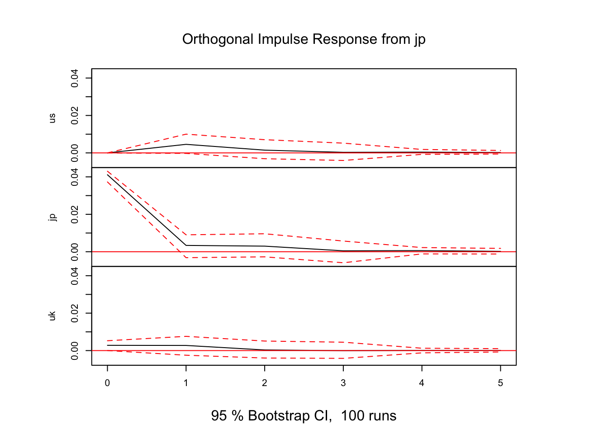
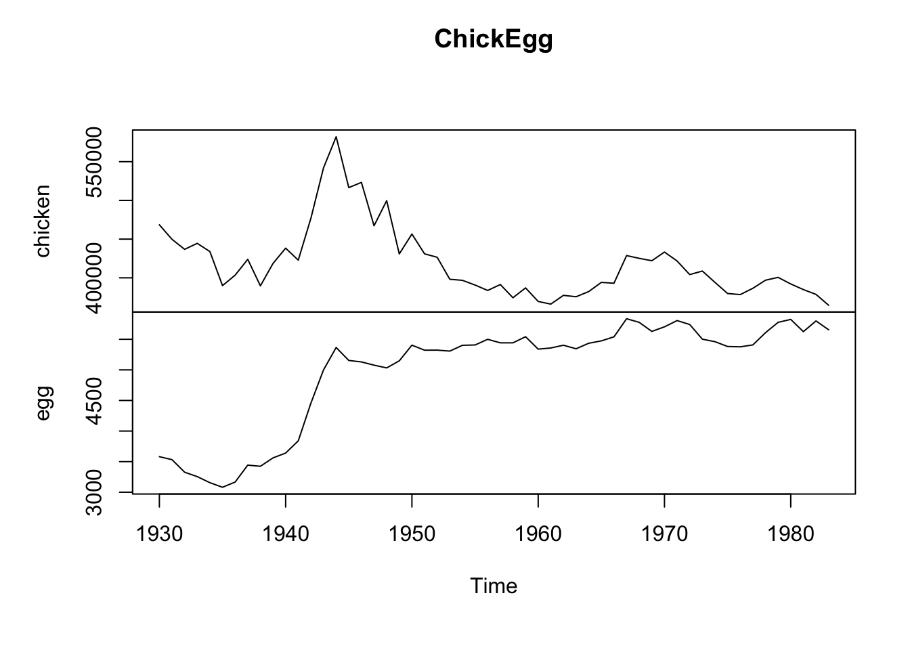
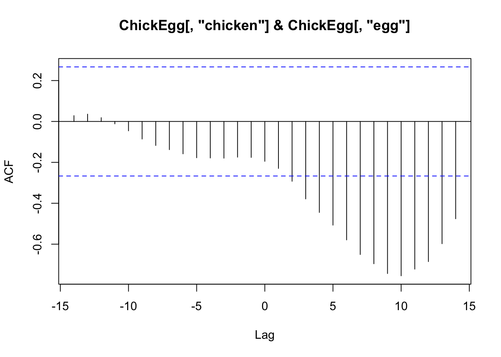

9 VARモデル
9.1 VAR(\(p\))モデルのシミュレーション
パッケージMTS, varsの利用
本章では主に, Tsayが作成した多変量時系列解析用のパッケージMTS および, パッケージvarsを利用する.
関数
MTS::VARMAsim()(VARMA(\(p,q\))モデルのパス生成)VAR(2)モデル例: \[Y_{1,t}=0.3 + 0.2 Y_{1,t-1} + 0.3 Y_{2,t-1} - 0.5 Y_{1,t-2} (+0 \cdot Y_{2,t-2}) + \epsilon_{1,t}\] \[Y_{2,t}=-0.3 -0.6 Y_{1,t-1} + 1.1 Y_{2,t-1} (+0 \cdot Y_{1,t-2}) - 0.6 Y_{2,t-2} + \epsilon_{2,t}\] \[ \left[ \begin{array}{r} \epsilon_{1,t} \\ \epsilon_{2,t} \end{array} \right] \sim_{\it i.i.d.} N \Big(\left[ \begin{array}{r} 0 \\ 0 \end{array} \right], \left[ \begin{array}{rr} 4 & 0.8 \\ 0.8 & 1 \end{array} \right]\Big) \]
上記VAR(2)モデルのサンプルパスの生成
library(MTS)
nlen <- 300
seed_val <- 1
set.seed(seed_val)
p0 <- c(0.3, -0.3) # Phi0 (定数項)
p1 <- matrix(c(0.2, -0.6, 0.3, 1.1), 2, 2) # Phi1 (ラグ1のVAR係数行列)
p2 <- matrix(c(-0.5, 0, 0, -0.6), 2, 2) # Phi2 (ラグ2のVAR係数行列)
p_mat <- cbind(p1, p2) # VAR係数行列を重ねた行列
sig_mat <- matrix(c(4, 0.8, 0.8, 1), 2, 2) # イノベーションの分散共分散行列 (正値定符号)
p_mat; sig_mat
## [,1] [,2] [,3] [,4]
## [1,] 0.2 0.3 -0.5 0.0
## [2,] -0.6 1.1 0.0 -0.6
## [,1] [,2]
## [1,] 4.0 0.8
## [2,] 0.8 1.0
ysim <- VARMAsim(nlen, arlags = 2, cnst = p0, phi = p_mat, sigma = sig_mat)
Yt <- ysim$series
MTSplot(Yt) # 時系列プロット
- 生成パス\(y_t\)の標本自己共分散行列
- 対角成分: 各成分の自己相関 \(\hat{\rho}_1(h), \hat{\rho}_2(h)\)
- 非対角成分: \(y^1_t,y^2_t\)間のクロス相関
- 行列の(1,2)成分: \(\hat{\rho}_{1,2}(h),\,h\ge0\)
- 行列の(2,1)成分: \(\hat{\rho}_{1,2}(h)\equiv\hat{\rho}_{2,1}(-h), \,h\le0\)

# acf()の出力結果の非対角成分の確認
# cor(Y1(t+h), Y2(t))
# h>0
cor(Yt[2:nlen, 1], Yt[1:(nlen-1), 2]) # Y1(t+1) vs Y2(t)
## [1] -0.2491788
cor(Yt[3:nlen, 1], Yt[1:(nlen-2), 2]) # Y1(t+2) vs Y2(t)
## [1] 0.5855889
# h<0
cor(Yt[1:(nlen-1), 1], Yt[2:nlen, 2]) # Y1(t) vs Y2(t+1)
## [1] -0.2269957
cor(Yt[1:(nlen-2), 1], Yt[3:nlen, 2]) # y1(t) vs Y2(t+2)
## [1] 0.21569029.2 VAR(\(p\))モデルの構築
ここでは, VAR(\(p\))モデル構築の中核のステップである, 同定・推定・予測の方法について示す.
VAR(\(p\))モデルの次数同定
- 分析者による最適なラグ次数の選択を支援
- 関数MTS::VARorder()
- maxp: ラグ次数の最大値 (デフォルト=13)
- 出力: BIC, HQ (Hannan and Quinn情報量規準), M(p), p-value (カイ二乗検定統計量 & p値)VARorder(Yt, maxp = 10, output = T)
## selected order: aic = 2
## selected order: bic = 2
## selected order: hq = 2
## Summary table:
## p AIC BIC HQ M(p) p-value
## [1,] 0 4.2159 4.2159 4.2159 0.0000 0.0000
## [2,] 1 3.8924 3.9418 3.9122 100.3170 0.0000
## [3,] 2 1.5169 1.6157 1.5564 683.4158 0.0000
## [4,] 3 1.5299 1.6781 1.5892 3.8619 0.4250
## [5,] 4 1.5434 1.7409 1.6224 3.6978 0.4484
## [6,] 5 1.5325 1.7794 1.6313 10.4626 0.0333
## [7,] 6 1.5548 1.8511 1.6734 1.2025 0.8777
## [8,] 7 1.5575 1.9032 1.6958 6.5850 0.1595
## [9,] 8 1.5799 1.9750 1.7381 1.1470 0.8867
## [10,] 9 1.5896 2.0340 1.7674 4.6092 0.3298
## [11,] 10 1.6099 2.1037 1.8075 1.7109 0.7887- 関数vars::VARselect()
- lag.max: ラグ次数の最大値 (デフォルト=10)
- type: 確定的な(定数・トレンド)項の種類
"const"(定数項有), "trend"(トレンド有), "both"(定数項・トレンド共有), "none"(両方無)
- 出力: AIC, HQ, SC (Schwarz情報量規準), FPE (forecast prediction error)library(vars)
vars::VARselect(Yt, lag.max = 10, type = "const")
## $selection
## AIC(n) HQ(n) SC(n) FPE(n)
## 2 2 2 2
##
## $criteria
## 1 2 3 4 5 6 7 8
## AIC(n) 3.907125 1.532547 1.546463 1.560866 1.550885 1.574122 1.577719 1.601096
## HQ(n) 3.937546 1.583248 1.617444 1.652128 1.662427 1.705945 1.729823 1.773480
## SC(n) 3.983054 1.659094 1.723629 1.788652 1.829289 1.903146 1.957362 2.031358
## FPE(n) 49.755778 4.629985 4.694921 4.763133 4.715983 4.827081 4.844789 4.959798
## 9 10
## AIC(n) 1.611643 1.632857
## HQ(n) 1.804307 1.845802
## SC(n) 2.092524 2.164357
## FPE(n) 5.012920 5.121076VAR(\(p\))モデルの推定
- 最小2乗法によるパラメータ推定
- 関数MTS::VAR()
- p: ラグ次数
- include.mean: 平均ベクトルを加える(推定する)か (デフォルト=T)
- fixed: パラメータに制約を付与する論理値行列. 制約付推定 (主に有意でない推定値の除去) に使用est_VAR1 <- MTS::VAR(Yt, p = 2, output = T, include.mean = T, fixed = NULL)
## Constant term:
## Estimates: 0.7010694 -0.4390955
## Std.Error: 0.2935926 0.1458662
## AR coefficient matrix
## AR( 1 )-matrix
## [,1] [,2]
## [1,] -0.0928 0.0954
## [2,] -0.0197 -0.0286
## standard error
## [,1] [,2]
## [1,] 0.0575 0.0462
## [2,] 0.0286 0.0230
## AR( 2 )-matrix
## [,1] [,2]
## [1,] 0.105 0.402
## [2,] -0.616 1.117
## standard error
## [,1] [,2]
## [1,] 0.0575 0.0465
## [2,] 0.0285 0.0231
##
## Residuals cov-mtx:
## [,1] [,2]
## [1,] 4.4990390 0.8786783
## [2,] 0.8786783 1.1105526
##
## det(SSE) = 4.224344
## AIC = 1.494197
## BIC = 1.592965
## HQ = 1.533724- 関数vars::VAR()
- p: ラグ次数
- type: 確定的な(定数・トレンド)項の種類
"const"(定数項有), "trend"(トレンド有), "both"(定数項・トレンド共有), "none"(両方無)
- season: 中心化済の季節性ダミー変数の追加 (frequencyを表す整数を指定)
- exogen: 外生変数の追加
- lag.max: ラグ次数の最大値 (ラグ次数選択において)
- in: 情報量規準 (lag.maxを指定している場合)est_VAR2 <- vars::VAR(Yt, p = 2, type = "const")
# 最小2乗法によるパラメータ推定
# type: "const"(定数項有), trend:("トレンド有"), "both", "none"
summary(est_VAR2)
##
## VAR Estimation Results:
## =========================
## Endogenous variables: y1, y2
## Deterministic variables: const
## Sample size: 298
## Log Likelihood: -1060.376
## Roots of the characteristic polynomial:
## 0.9308 0.7541 0.7541 0.6891
## Call:
## vars::VAR(y = Yt, p = 2, type = "const")
##
##
## Estimation results for equation y1:
## ===================================
## y1 = y1.l1 + y2.l1 + y1.l2 + y2.l2 + const
##
## Estimate Std. Error t value Pr(>|t|)
## y1.l1 -0.09285 0.05751 -1.614 0.1075
## y2.l1 0.09536 0.04624 2.062 0.0401 *
## y1.l2 0.10498 0.05745 1.827 0.0687 .
## y2.l2 0.40175 0.04645 8.648 3.49e-16 ***
## const 0.70107 0.29359 2.388 0.0176 *
## ---
## Signif. codes: 0 '***' 0.001 '**' 0.01 '*' 0.05 '.' 0.1 ' ' 1
##
##
## Residual standard error: 2.139 on 293 degrees of freedom
## Multiple R-Squared: 0.3636, Adjusted R-squared: 0.3549
## F-statistic: 41.86 on 4 and 293 DF, p-value: < 2.2e-16
##
##
## Estimation results for equation y2:
## ===================================
## y2 = y1.l1 + y2.l1 + y1.l2 + y2.l2 + const
##
## Estimate Std. Error t value Pr(>|t|)
## y1.l1 -0.01967 0.02857 -0.688 0.49185
## y2.l1 -0.02859 0.02297 -1.244 0.21435
## y1.l2 -0.61604 0.02854 -21.583 < 2e-16 ***
## y2.l2 1.11695 0.02308 48.395 < 2e-16 ***
## const -0.43910 0.14587 -3.010 0.00284 **
## ---
## Signif. codes: 0 '***' 0.001 '**' 0.01 '*' 0.05 '.' 0.1 ' ' 1
##
##
## Residual standard error: 1.063 on 293 degrees of freedom
## Multiple R-Squared: 0.9232, Adjusted R-squared: 0.9222
## F-statistic: 880.9 on 4 and 293 DF, p-value: < 2.2e-16
##
##
##
## Covariance matrix of residuals:
## y1 y2
## y1 4.5758 0.8937
## y2 0.8937 1.1295
##
## Correlation matrix of residuals:
## y1 y2
## y1 1.0000 0.3931
## y2 0.3931 1.0000VAR(\(p\))モデル予測
- 関数MTS::VARpred()
- h: 予測期間の長さ
- orig: 予測の起点 (デフォルト=0, 最終のデータ点)
- Out.level: 出力の詳細のコントロール (T/F)pred_VAR1 <- VARpred(est_VAR1, h = 20, orig = 0, Out.level = F, output = T)
## orig 300
## Forecasts at origin: 300
## [,1] [,2]
## [1,] -1.6935 -4.659
## [2,] -1.5588 -2.224
## [3,] -1.4159 -4.506
## [4,] -0.6541 -1.806
## [5,] -1.3692 -4.535
## [6,] -0.3984 -1.896
## [7,] -1.4084 -4.599
## [8,] -0.4105 -2.153
## [9,] -1.4616 -4.638
## [10,] -0.5135 -2.429
## [11,] -1.4999 -4.640
## [12,] -0.6321 -2.674
## [13,] -1.5169 -4.609
## [14,] -0.7383 -2.875
## [15,] -1.5155 -4.556
## [16,] -0.8252 -3.035
## [17,] -1.5012 -4.491
## [18,] -0.8939 -3.163
## [19,] -1.4795 -4.423
## [20,] -0.9480 -3.266
## Standard Errors of predictions:
## [,1] [,2]
## [1,] 2.121 1.054
## [2,] 2.129 1.056
## [3,] 2.199 1.729
## [4,] 2.205 1.734
## [5,] 2.269 2.315
## [6,] 2.270 2.333
## [7,] 2.357 2.728
## [8,] 2.358 2.760
## [9,] 2.432 3.010
## [10,] 2.435 3.050
## [11,] 2.488 3.207
## [12,] 2.493 3.249
## [13,] 2.528 3.349
## [14,] 2.535 3.388
## [15,] 2.557 3.453
## [16,] 2.564 3.486
## [17,] 2.579 3.530
## [18,] 2.586 3.557
## [19,] 2.596 3.588
## [20,] 2.602 3.609
## Root mean square errors of predictions:
## [,1] [,2]
## [1,] 2.139 1.063
## [2,] 2.154 1.061
## [3,] 2.408 2.994
## [4,] 2.226 1.751
## [5,] 2.460 3.586
## [6,] 2.275 2.391
## [7,] 2.616 3.717
## [8,] 2.359 2.859
## [9,] 2.656 3.698
## [10,] 2.444 3.174
## [11,] 2.649 3.664
## [12,] 2.510 3.378
## [13,] 2.636 3.650
## [14,] 2.557 3.508
## [15,] 2.628 3.653
## [16,] 2.587 3.591
## [17,] 2.626 3.667
## [18,] 2.607 3.643
## [19,] 2.627 3.683
## [20,] 2.620 3.678- 関数predict() (`vars::VAR`の出力に対して適用)
- n.ahead: 予測期間の長さ
- ci: 予測信頼区間
pred_VAR2$fcst
## $y1
## fcst lower upper CI
## [1,] -1.6935489 -5.886138 2.499040 4.192589
## [2,] -1.5588289 -5.766916 2.649258 4.208087
## [3,] -1.4158594 -5.761805 2.930087 4.345946
## [4,] -0.6541053 -5.012838 3.704628 4.358733
## [5,] -1.3691744 -5.853357 3.115008 4.484182
## [6,] -0.3983955 -4.885523 4.088732 4.487127
## [7,] -1.4084408 -6.067917 3.251035 4.659476
## [8,] -0.4104564 -5.070912 4.250000 4.660456
## [9,] -1.4615648 -6.269351 3.346221 4.807786
## [10,] -0.5135316 -5.326625 4.299561 4.813093
##
## $y2
## fcst lower upper CI
## [1,] -4.659151 -6.742164 -2.57613758 2.083013
## [2,] -2.223532 -4.309952 -0.13711248 2.086420
## [3,] -4.505606 -7.922276 -1.08893531 3.416670
## [4,] -1.805711 -5.233098 1.62167648 3.427387
## [5,] -4.534908 -9.110020 0.04020335 4.575112
## [6,] -1.896451 -6.507997 2.71509585 4.611547
## [7,] -4.598833 -9.990735 0.79306982 5.391903
## [8,] -2.152730 -7.607556 3.30209602 5.454826
## [9,] -4.638479 -10.588832 1.31187382 5.950353
## [10,] -2.429372 -8.458542 3.59979824 6.029170- MTSパッケージは, 外生変数有りのVARXモデル, VMAモデル, さらには, 一般のVARMAモデルに対しても, 次数同定, モデル推定, 予測のための関数を用意.
9.3 VAR解析
VARモデルによる変数間の動学的関係性の分析を行う方法論として, グレンジャー因果性分析, インパルス応答分析, 分散分解の三つがある.
- グレンジャー因果性分析: ある変数のラグ値が他の変数の予測に有用かを調べる
- インパルス応答関数（IRF): 一変数の撹乱項に1単位のショックを与えた場合の他の変数への伝播の様子を調べる
- 分散分解: 各変数の予測誤差分散を各ショックからの相対的寄与の大きさに分解する
これらの分析により, 以下について包括的な理解が得られる: - 変数間の動的な関係 - ショックの伝播メカニズム - システム内の互いに動的に影響を与える各変数の相対的な重要性
VAR(\(p\)) モデルの構築 (復習)
VAR解析を行うには, 事前に分析対象の多変量時系列データに対して 前節までに解説してきたように, 適切な定常VARモデルを構築し推定することが重要である.
モデル特定・推定 - 分析の目的や, 経済理論や専門知識等に基づいてモデリングに使用する変数 (内生変数) を選択 - 変数の定常性を確認. 必要に応じて, 差分を取る, 分解する等データ加工 - 情報量基準等を用いて適切なラグ次数を決定 - モデルを推定
モデル診断 - 残差の自己相関検定 - 不均一分散 (ARCH効果) の確認 - 残差の正規性検定, 等 - 必要に応じて, モデルの特定・推定をやり直す
以下では, 引き続き, MTSパッケージ, varsパッケージを利用する
- https://www.rdocumentation.org/packages/MTS/versions/1.0
- https://www.rdocumentation.org/packages/vars/versions/1.5-3
以下では, シミュレーションデータを使用する
- MTSパッケージの関数
VARsim()でパスを生成 - varパッケージの関数
VARselect(),VAR()を使って, 次数同定およびモデル推定
\[Y_{1,t}=1.0 + 0.6 Y_{1,t-1} + 0.1 Y_{2,t-1} + \epsilon_{1,t}\] \[Y_{2,t}=-1.0 +0.5 Y_{1,t-1} + 0.7 Y_{2,t-1} + \epsilon_{2,t}\] \[ \left[ \begin{array}{r} \epsilon_{1,t} \\ \epsilon_{2,t} \end{array} \right] \sim_{\it i.i.d.} N \Big(\left[ \begin{array}{r} 0 \\ 0 \end{array} \right], \left[ \begin{array}{rr} 4 & 1 \\ 1 & 1 \end{array} \right]\Big) \]
library(MTS)
nlen <- 300
seed_val <- 1
set.seed(seed_val)
p0 <- c(1, -1) # Phi0 (定数項)
p_mat <- matrix(c(0.6, 0.5, 0.1, 0.7), 2, 2) # Phi1 (ラグ1のVAR係数行列)
sig_mat <- matrix(c(4, 1, 1, 1), 2, 2) # イノベーションの分散共分散行列 (正値定符号)
p_mat; sig_mat## [,1] [,2]
## [1,] 0.6 0.1
## [2,] 0.5 0.7## [,1] [,2]
## [1,] 4 1
## [2,] 1 1ysim <- VARMAsim(nlen, arlags = 1, cnst = p0, phi = p_mat, sigma = sig_mat)
Yt <- ysim$series
acf(Yt) # クロス相関

VAR(\(p\))モデルの次数同定
- 関数
vars::VARselect()
## Loading required package: MASS## Loading required package: strucchange## Loading required package: zoo##
## Attaching package: 'zoo'## The following objects are masked from 'package:base':
##
## as.Date, as.Date.numeric## Loading required package: sandwich## Loading required package: urca## Loading required package: lmtest##
## Attaching package: 'vars'## The following object is masked from 'package:MTS':
##
## VAR## $selection
## AIC(n) HQ(n) SC(n) FPE(n)
## 1 1 1 1
##
## $criteria
## 1 2 3 4 5
## AIC(n) 1.417189 1.432965 1.454790 1.471126 1.460469
## HQ(n) 1.447216 1.483011 1.524855 1.561208 1.570570
## SC(n) 1.492178 1.557947 1.629765 1.696094 1.735430
## FPE(n) 4.125512 4.191134 4.283662 4.354299 4.308277VAR(\(p\))モデルの推定
- 関数
vars::VAR()
##
## VAR Estimation Results:
## =========================
## Endogenous variables: Y1, Y2
## Deterministic variables: const
## Sample size: 299
## Log Likelihood: -1051.693
## Roots of the characteristic polynomial:
## 0.8123 0.3886
## Call:
## vars::VAR(y = Yt, p = 1, type = "const")
##
##
## Estimation results for equation Y1:
## ===================================
## Y1 = Y1.l1 + Y2.l1 + const
##
## Estimate Std. Error t value Pr(>|t|)
## Y1.l1 0.50728 0.06004 8.449 1.35e-15 ***
## Y2.l1 0.07759 0.04514 1.719 0.0866 .
## const 1.08864 0.17861 6.095 3.40e-09 ***
## ---
## Signif. codes: 0 '***' 0.001 '**' 0.01 '*' 0.05 '.' 0.1 ' ' 1
##
##
## Residual standard error: 2.133 on 296 degrees of freedom
## Multiple R-Squared: 0.3322, Adjusted R-squared: 0.3277
## F-statistic: 73.64 on 2 and 296 DF, p-value: < 2.2e-16
##
##
## Estimation results for equation Y2:
## ===================================
## Y2 = Y1.l1 + Y2.l1 + const
##
## Estimate Std. Error t value Pr(>|t|)
## Y1.l1 0.46669 0.03001 15.55 <2e-16 ***
## Y2.l1 0.69357 0.02256 30.74 <2e-16 ***
## const -0.97716 0.08928 -10.95 <2e-16 ***
## ---
## Signif. codes: 0 '***' 0.001 '**' 0.01 '*' 0.05 '.' 0.1 ' ' 1
##
##
## Residual standard error: 1.066 on 296 degrees of freedom
## Multiple R-Squared: 0.9054, Adjusted R-squared: 0.9048
## F-statistic: 1417 on 2 and 296 DF, p-value: < 2.2e-16
##
##
##
## Covariance matrix of residuals:
## Y1 Y2
## Y1 4.551 1.096
## Y2 1.096 1.137
##
## Correlation matrix of residuals:
## Y1 Y2
## Y1 1.000 0.482
## Y2 0.482 1.000次に, 上で推定されたVAR(1)モデルを使用して, VARモデルによる変数間の動学的関係性の分析を行う.
グレンジャーの因果性検定
- 関数vars::causality()
- x: 関数VAR()により生成された'varest'クラスのオブジェクト
- cause: cause変数 (デフォルトは入力x$yの第1列の変数)
- vcov.: 推定係数の共分散行列の指定
- boot: 棄却点を計算する際にwildブートストラップを使用するか否か(T/F)
- boot.runs: boot=TRUEの場合のブートストラップの反復数## $Granger
##
## Granger causality H0: Y1 do not Granger-cause Y2
##
## data: VAR object est_VAR1
## F-Test = 241.8, df1 = 1, df2 = 592, p-value < 2.2e-16
##
##
## $Instant
##
## H0: No instantaneous causality between: Y1 and Y2
##
## data: VAR object est_VAR1
## Chi-squared = 56.374, df = 1, p-value = 5.995e-14## $Granger
##
## Granger causality H0: Y2 do not Granger-cause Y1
##
## data: VAR object est_VAR1
## F-Test = 2.9555, df1 = 1, df2 = 592, p-value = 0.08611
##
##
## $Instant
##
## H0: No instantaneous causality between: Y2 and Y1
##
## data: VAR object est_VAR1
## Chi-squared = 56.374, df = 1, p-value = 5.995e-14インパルス応答
直交インパルス応答
- 関数vars::irf()
- x: 関数VAR()により生成された'varest'クラスのオブジェクト等
- impulse: インパルス変数 (デフォルト=全変数)
- response: 応答変数 (デフォルト=全変数)
- n.ahead: 将来区間の長さ
- ortho: 直交インパルス応答か (デフォルト=T)
- cumulative: 累積インパルス応答か (デフォルト=F)
- boot: インパルス応答係数のブートストラップ誤差バンド計算の有無 (T/F)
- ci: bootstrap誤差バンドの信頼区間
- runs: bootstrap回数# vars::irf()関数 (ortho = T (デフォルト))
ip1 <- vars::irf(est_VAR1, impulse = c("Y1"), response = c("Y1", "Y2"),
n.ahead = 5, boot = T)
ip2 <- vars::irf(est_VAR1, impulse = c("Y2"), response = c("Y1", "Y2"),
n.ahead = 5, boot = T)
plot(ip1)

非直交インパルス応答
# vars::irf()関数 (ortho = F)
ip1 <- vars::irf(est_VAR1, impulse = c("Y1"), response = c("Y1", "Y2"),
ortho = F, n.ahead = 5, boot = T)
ip2 <- vars::irf(est_VAR1, impulse = c("Y2"), response = c("Y1", "Y2"),
ortho = F, n.ahead = 5, boot = T)
plot(ip1)

- 累積インパルス応答
ip1_cum <- vars::irf(est_VAR1, impulse = c("Y1"), response = c("Y1","Y2"),
n.ahead = 5, boot = TRUE, cumulative=T)
ip2_cum <- vars::irf(est_VAR1, impulse = c("Y2"), response = c("Y2","Y1"),
n.ahead = 5, boot = TRUE, cumulative=T)
plot(ip1_cum)


9.4 VAR解析 (データ分析例)
VARモデルによる変数間の動学的関係性の分析
事例1: ソフトバンク(9434) vs ソフトバンクグループ(9984)
- ソフトバンク(9434): 上場日 2018年12月19日
- 親会社ソフトバンクG (9984)
- 保有比率(%): 66.49 (2019.03), 67.13 (2020.03), 40.86 (2021.03), 40.68 (2022.03), 40.47 (2023.03)
- cf. https://www.buffett-code.com/company/9434/mainshareholder
- データをYahoo!ファイナンスより入手
## Loading required package: xts## Loading required package: zoo##
## Attaching package: 'zoo'## The following objects are masked from 'package:base':
##
## as.Date, as.Date.numeric## Loading required package: TTR## Registered S3 method overwritten by 'quantmod':
## method from
## as.zoo.data.frame zoos9984 <- getSymbols('9984.T', from = '2018-12-19', auto.assign = FALSE)
s9434 <- getSymbols('9434.T', from = '2018-12-19', auto.assign = FALSE)
s9984ret <- diff(log(s9984$`9984.T.Adjusted`))[-1]
s9434ret <- diff(log(s9434$`9434.T.Adjusted`))[-1]
sb <- merge.xts(s9984ret, s9434ret, join = "inner")
colnames(sb) <- c("s9984", "s9434")- 各変数の単位根検定
library(fUnitRoots)
# unitrootTest(s9984, type = "c", lags = 1) # type: "nc", "c", "ct"
unitrootTest(s9984ret, type = "c", lags = 1)##
## Title:
## Augmented Dickey-Fuller Test
##
## Test Results:
## PARAMETER:
## Lag Order: 1
## STATISTIC:
## DF: -26.4993
## P VALUE:
## t: < 2.2e-16
## n: 0.00225
##
## Description:
## Sun Feb 2 15:37:03 2025 by user:##
## Title:
## Augmented Dickey-Fuller Test
##
## Test Results:
## PARAMETER:
## Lag Order: 1
## STATISTIC:
## DF: -28.6553
## P VALUE:
## t: < 2.2e-16
## n: 0.00131
##
## Description:
## Sun Feb 2 15:37:03 2025 by user:–> 帰無仮説(\(\phi_1 = 1\))を棄却 (単位根なし)
標本自己共分散行列

VARモデルの推定
- 以下, パッケージvarsを利用
- VAR(p)モデルの次数の決定
## Loading required package: MASS## Loading required package: strucchange## Loading required package: sandwich## Loading required package: urca##
## Attaching package: 'urca'## The following objects are masked from 'package:fUnitRoots':
##
## punitroot, qunitroot, unitrootTable## Loading required package: lmtest## $selection
## AIC(n) HQ(n) SC(n) FPE(n)
## 3 1 1 3
##
## $criteria
## 1 2 3 4 5
## AIC(n) -1.633298e+01 -1.633264e+01 -1.633312e+01 -1.633069e+01 -1.632768e+01
## HQ(n) -1.632499e+01 -1.631933e+01 -1.631449e+01 -1.630673e+01 -1.629840e+01
## SC(n) -1.631155e+01 -1.629693e+01 -1.628313e+01 -1.626641e+01 -1.624912e+01
## FPE(n) 8.066348e-08 8.069076e-08 8.065185e-08 8.084818e-08 8.109184e-08–> AIC, FPEでは3, HQ, SCでは1が最適
VAR(1)モデルの推定 (OLS推定)
##
## VAR Estimation Results:
## =========================
## Endogenous variables: s9984, s9434
## Deterministic variables: const
## Sample size: 1489
## Log Likelihood: 7931.129
## Roots of the characteristic polynomial:
## 0.02715 0.006565
## Call:
## vars::VAR(y = sb, p = 1, type = "const")
##
##
## Estimation results for equation s9984:
## ======================================
## s9984 = s9984.l1 + s9434.l1 + const
##
## Estimate Std. Error t value Pr(>|t|)
## s9984.l1 0.0536245 0.0265394 2.021 0.043504 *
## s9434.l1 -0.2348141 0.0709433 -3.310 0.000956 ***
## const 0.0006875 0.0007246 0.949 0.342908
## ---
## Signif. codes: 0 '***' 0.001 '**' 0.01 '*' 0.05 '.' 0.1 ' ' 1
##
##
## Residual standard error: 0.02794 on 1486 degrees of freedom
## Multiple R-Squared: 0.00841, Adjusted R-squared: 0.007076
## F-statistic: 6.302 on 2 and 1486 DF, p-value: 0.001883
##
##
## Estimation results for equation s9434:
## ======================================
## s9434 = s9984.l1 + s9434.l1 + const
##
## Estimate Std. Error t value Pr(>|t|)
## s9984.l1 0.0067873 0.0099711 0.681 0.496
## s9434.l1 -0.0330441 0.0266540 -1.240 0.215
## const 0.0004181 0.0002722 1.536 0.125
##
##
## Residual standard error: 0.0105 on 1486 degrees of freedom
## Multiple R-Squared: 0.001142, Adjusted R-squared: -0.0002023
## F-statistic: 0.8495 on 2 and 1486 DF, p-value: 0.4278
##
##
##
## Covariance matrix of residuals:
## s9984 s9434
## s9984 7.805e-04 6.824e-05
## s9434 6.824e-05 1.102e-04
##
## Correlation matrix of residuals:
## s9984 s9434
## s9984 1.0000 0.2327
## s9434 0.2327 1.0000- –> 2式とも, 9984_{t-1}の係数, 有意でない. 一方, 9434_{t-1} → 9984_tの係数, 有意
インパルス応答
- 直交化インパルス応答
# s9434 --> 将来のs9434, s9984の変動を調べる
ip <- vars::irf(var1, impulse = c("s9434"), response = c("s9434", "s9984"),
n.ahead = 5, boot = TRUE)
# ip <- vars::irf(var1, impulse = c("s9984"), response = c("s9984", "s9434"),
# n.ahead = 5, boot = TRUE)
# ortho = T (デフォルト): 直交化インパルス応答; ortho = F: 非直交化インパルス応答
# boot = T: ブートストラップ法により, 信頼区間計算
# cumulative = T: 累積インパルス応答. デフォルトはF.
plot(ip)
##
## Impulse response coefficients
## $s9434
## s9984 s9434
## [1,] 0.000000e+00 1.020824e-02
## [2,] -2.397039e-03 -3.373225e-04
## [3,] -4.933194e-05 -5.122915e-06
## [4,] -1.442469e-06 -1.655489e-07
## [5,] -3.847845e-08 -4.320061e-09
## [6,] -1.048977e-09 -1.184125e-10
##
##
## Lower Band, CI= 0.95
## $s9434
## s9984 s9434
## [1,] 0.000000e+00 9.493183e-03
## [2,] -3.582770e-03 -9.457099e-04
## [3,] -3.065790e-04 -4.916439e-05
## [4,] -3.267405e-05 -1.079402e-05
## [5,] -3.744469e-06 -1.572134e-07
## [6,] -4.437798e-07 -7.913895e-08
##
##
## Upper Band, CI= 0.95
## $s9434
## s9984 s9434
## [1,] 0.000000e+00 1.102003e-02
## [2,] -1.251266e-03 2.370375e-04
## [3,] 1.789836e-04 8.678255e-05
## [4,] 5.133117e-06 1.961858e-06
## [5,] 1.937481e-06 8.368933e-07
## [6,] 3.886047e-08 4.649871e-08ip_2 <- vars::irf(var1, impulse = c("s9984"), response = c("s9984", "s9434"),
n.ahead = 5, boot = TRUE)
plot(ip_2)
##
## Impulse response coefficients
## $s9984
## s9984 s9434
## [1,] 2.793763e-02 2.442718e-03
## [2,] 9.245571e-04 1.089039e-04
## [3,] 2.400676e-05 2.676622e-06
## [4,] 6.588420e-07 7.449465e-08
## [5,] 1.783768e-08 2.010154e-09
## [6,] 4.845245e-10 5.464610e-11
##
##
## Lower Band, CI= 0.95
## $s9984
## s9984 s9434
## [1,] 2.571446e-02 1.690034e-03
## [2,] -4.160368e-04 -3.768580e-04
## [3,] -1.044847e-04 -1.905597e-05
## [4,] -5.268220e-06 -3.539625e-06
## [5,] -5.060434e-07 -1.725492e-07
## [6,] -2.630376e-08 -2.392929e-08
##
##
## Upper Band, CI= 0.95
## $s9984
## s9984 s9434
## [1,] 2.976239e-02 3.289291e-03
## [2,] 2.267830e-03 5.811297e-04
## [3,] 2.476625e-04 3.752598e-05
## [4,] 2.183536e-05 1.265666e-06
## [5,] 2.624359e-06 1.337788e-07
## [6,] 2.536941e-07 1.075852e-08- 非直交化インパルス応答
ip_3 <- vars::irf(var1, impulse = c("s9434"), response = c("s9434", "s9984"),
ortho = F, n.ahead = 5, boot = TRUE)
plot(ip_3)
##
## Impulse response coefficients
## $s9434
## s9984 s9434
## [1,] 0.000000e+00 1.000000e+00
## [2,] -2.348141e-01 -3.304414e-02
## [3,] -4.832561e-03 -5.018412e-04
## [4,] -1.413043e-04 -1.621719e-05
## [5,] -3.769352e-06 -4.231935e-07
## [6,] -1.027578e-07 -1.159970e-08
##
##
## Lower Band, CI= 0.95
## $s9434
## s9984 s9434
## [1,] 0.0000000000 1.000000e+00
## [2,] -0.3693210967 -8.068528e-02
## [3,] -0.0231772919 -5.970923e-03
## [4,] -0.0025977950 -5.512115e-04
## [5,] -0.0002252708 -6.639547e-06
## [6,] -0.0000273763 -3.885097e-06
##
##
## Upper Band, CI= 0.95
## $s9434
## s9984 s9434
## [1,] 0.000000e+00 1.000000e+00
## [2,] -1.328334e-01 1.678846e-02
## [3,] 1.801831e-02 6.571675e-03
## [4,] 1.081558e-03 2.044872e-04
## [5,] 1.554910e-04 5.002845e-05
## [6,] 1.980854e-06 2.672168e-06- 累積インパルス応答
ip_cum <- vars::irf(var1, impulse = c("s9434"), response = c("s9434", "s9984"),
n.ahead = 5, boot = TRUE, cumulative = T)
plot(ip_cum)
Grangerの因果性検定
## $Granger
##
## Granger causality H0: s9434 do not Granger-cause s9984
##
## data: VAR object var1
## F-Test = 10.955, df1 = 1, df2 = 2972, p-value = 0.0009445
##
##
## $Instant
##
## H0: No instantaneous causality between: s9434 and s9984
##
## data: VAR object var1
## Chi-squared = 76.498, df = 1, p-value < 2.2e-16- –> 帰無仮説(因果性なし)棄却 → 9434をcauseとするGranger因果性の存在を示唆
## $Granger
##
## Granger causality H0: s9984 do not Granger-cause s9434
##
## data: VAR object var1
## F-Test = 0.46335, df1 = 1, df2 = 2972, p-value = 0.4961
##
##
## $Instant
##
## H0: No instantaneous causality between: s9984 and s9434
##
## data: VAR object var1
## Chi-squared = 76.498, df = 1, p-value < 2.2e-16- –> 帰無仮説(因果性なし)棄却できず → 9984をcauseとするGranger因果性存在せず
- 一方、Grangerの瞬時因果性, 9984, 9434, いずれの方向も棄却できず → 存在を示唆
事例2: 米英日3株式市場 (S&P500, FTSE, 日経平均)
- データをquantmodパッケージを使って, Yahoo!ファイナンスより入手
gspc <- getSymbols('^GSPC', periodicity = "monthly", from = '1999-12-01', to = '2024-11-30', auto.assign = FALSE)
ftse <- getSymbols('^FTSE', periodicity = "monthly", from = '1999-12-01', to = '2024-11-30', auto.assign = FALSE)
n225 <- getSymbols('^N225', periodicity = "monthly", from = '1999-12-01', to = '2024-11-30', auto.assign = FALSE)
# gspc: 1999-12-01-- (月末株価なのに, 1日表示)
# ftse: 1999-12-01-- (同)
# n225: 1999-12-31-- (月末表示)
# → n225に合わせる
# 月次終値 (調整済) より対数収益率を計算
us <- diff(log(gspc$GSPC.Adjusted))[-1]
uk <- diff(log(ftse$FTSE.Adjusted))[-1]
jp <- diff(log(n225$N225.Adjusted))[-1]
# 3市場データの結合
mkt <- cbind(coredata(us), coredata(uk), coredata(jp))
colnames(mkt) <- c("us", "uk", "jp")
mkt <- xts(mkt, index(jp))
mkt <- mkt[-nrow(mkt), ] # 最終行は月中時点 (未完)
# 結果の表示
head(mkt)## us uk jp
## 1999-12-31 -0.05224485 -0.100351609 0.03147106
## 2000-01-31 -0.02031300 -0.005743495 0.02125795
## 2000-02-29 0.09232375 0.048174179 0.01875144
## 2000-03-31 -0.03127991 -0.033078382 -0.12354810
## 2000-04-30 -0.02215875 0.005044624 -0.09575560
## 2000-05-31 0.02365163 -0.007370510 0.06395117plot(cumsum(mkt), type = "l", col = c("black", "lightblue", "orange"),
main = "S&P500 (black), FTSE (lightblue), NK225 (orange)")
VARモデルの推定
- 以下, 引き続きパッケージvarsを利用
- 3変量VAR(2)モデルを仮定した場合の推定
## us uk jp
## 1999-12-31 -0.05224485 -0.100351609 0.03147106
## 2000-01-31 -0.02031300 -0.005743495 0.02125795
## 2000-02-29 0.09232375 0.048174179 0.01875144
## 2000-03-31 -0.03127991 -0.033078382 -0.12354810
## 2000-04-30 -0.02215875 0.005044624 -0.09575560var2usukjp <- vars::VAR(usukjp, p = 2, type = "const")
# summary(var2usukjp)
# 係数推定値 (値のみ）
coef(var2usukjp)## $us
## Estimate Std. Error t value Pr(>|t|)
## us.l1 -0.100789381 0.104185184 -0.96740609 0.33414994
## uk.l1 0.045868853 0.110362568 0.41561966 0.67799677
## jp.l1 0.114750906 0.063975226 1.79367723 0.07391004
## us.l2 -0.133893130 0.104714293 -1.27865190 0.20204551
## uk.l2 0.008473531 0.109109720 0.07766065 0.93815174
## jp.l2 0.055752503 0.063474022 0.87835150 0.38048265
## const 0.005481561 0.002653987 2.06540610 0.03977602
##
## $uk
## Estimate Std. Error t value Pr(>|t|)
## us.l1 0.077801084 0.090443271 0.8602197 0.3903810
## uk.l1 -0.143021810 0.095805864 -1.4928294 0.1365727
## jp.l1 0.081557621 0.055536963 1.4685286 0.1430483
## us.l2 -0.144458741 0.090902591 -1.5891598 0.1131177
## uk.l2 0.059647469 0.094718266 0.6297357 0.5293651
## jp.l2 0.010718471 0.055101867 0.1945210 0.8459046
## const 0.001059086 0.002303929 0.4596871 0.6460865
##
## $jp
## Estimate Std. Error t value Pr(>|t|)
## us.l1 -0.019909207 0.127544318 -0.1560964 0.8760660
## uk.l1 0.100071793 0.135106719 0.7406870 0.4594846
## jp.l1 0.078471208 0.078318972 1.0019438 0.3172089
## us.l2 -0.183655004 0.128192057 -1.4326551 0.1530372
## uk.l2 0.076219074 0.133572973 0.5706175 0.5687024
## jp.l2 0.075815442 0.077705394 0.9756780 0.3300400
## const 0.002701346 0.003249032 0.8314311 0.4064165## [[1]]
## us.l1 uk.l1 jp.l1
## us -0.10078938 0.04586885 0.11475091
## uk 0.07780108 -0.14302181 0.08155762
## jp -0.01990921 0.10007179 0.07847121
##
## [[2]]
## us.l2 uk.l2 jp.l2
## us -0.1338931 0.008473531 0.05575250
## uk -0.1444587 0.059647469 0.01071847
## jp -0.1836550 0.076219074 0.07581544## us.l1 uk.l1 jp.l1 us.l2 uk.l2 jp.l2
## us -0.10078938 0.04586885 0.11475091 -0.1338931 0.008473531 0.05575250
## uk 0.07780108 -0.14302181 0.08155762 -0.1444587 0.059647469 0.01071847
## jp -0.01990921 0.10007179 0.07847121 -0.1836550 0.076219074 0.07581544
## const
## us 0.005481561
## uk 0.001059086
## jp 0.002701346- 次数\(p\)を選択する場合
- 関数
VAR()によって, 情報量規準により最適な次数を選択- 最大次数
lag.maxと採用する情報量規準icを指定
- 最大次数
##
## VAR Estimation Results:
## =========================
## Endogenous variables: us, uk, jp
## Deterministic variables: const
## Sample size: 297
## Log Likelihood: 1727.17
## Roots of the characteristic polynomial:
## 0.1921 0.1145 0.08493
## Call:
## vars::VAR(y = usukjp, type = "const", lag.max = 5, ic = "AIC")
##
##
## Estimation results for equation us:
## ===================================
## us = us.l1 + uk.l1 + jp.l1 + const
##
## Estimate Std. Error t value Pr(>|t|)
## us.l1 -0.085850 0.102719 -0.836 0.4040
## uk.l1 0.047703 0.106645 0.447 0.6550
## jp.l1 0.101421 0.063066 1.608 0.1089
## const 0.004874 0.002611 1.867 0.0629 .
## ---
## Signif. codes: 0 '***' 0.001 '**' 0.01 '*' 0.05 '.' 0.1 ' ' 1
##
##
## Residual standard error: 0.0445 on 293 degrees of freedom
## Multiple R-Squared: 0.01079, Adjusted R-squared: 0.0006629
## F-statistic: 1.065 on 3 and 293 DF, p-value: 0.364
##
##
## Estimation results for equation uk:
## ===================================
## uk = us.l1 + uk.l1 + jp.l1 + const
##
## Estimate Std. Error t value Pr(>|t|)
## us.l1 0.0960686 0.0893126 1.076 0.2830
## uk.l1 -0.1543287 0.0927260 -1.664 0.0971 .
## jp.l1 0.0699508 0.0548350 1.276 0.2031
## const 0.0003514 0.0022701 0.155 0.8771
## ---
## Signif. codes: 0 '***' 0.001 '**' 0.01 '*' 0.05 '.' 0.1 ' ' 1
##
##
## Residual standard error: 0.03869 on 293 degrees of freedom
## Multiple R-Squared: 0.01622, Adjusted R-squared: 0.006143
## F-statistic: 1.61 on 3 and 293 DF, p-value: 0.1872
##
##
## Estimation results for equation jp:
## ===================================
## jp = us.l1 + uk.l1 + jp.l1 + const
##
## Estimate Std. Error t value Pr(>|t|)
## us.l1 0.006425 0.125600 0.051 0.959
## uk.l1 0.068097 0.130400 0.522 0.602
## jp.l1 0.077618 0.077114 1.007 0.315
## const 0.002083 0.003192 0.653 0.515
##
##
## Residual standard error: 0.05441 on 293 degrees of freedom
## Multiple R-Squared: 0.01366, Adjusted R-squared: 0.003559
## F-statistic: 1.352 on 3 and 293 DF, p-value: 0.2576
##
##
##
## Covariance matrix of residuals:
## us uk jp
## us 0.001980 0.001358 0.001589
## uk 0.001358 0.001497 0.001206
## jp 0.001589 0.001206 0.002960
##
## Correlation matrix of residuals:
## us uk jp
## us 1.0000 0.7890 0.6564
## uk 0.7890 1.0000 0.5729
## jp 0.6564 0.5729 1.0000–> \(p=1\)を選択
推定されたVARモデルによる予測
## $us
## fcst lower upper CI
## [1,] 0.005354386 -0.08196850 0.09267728 0.08732289
## [2,] 0.007556693 -0.08033117 0.09544455 0.08788786
## [3,] 0.004571038 -0.08365687 0.09279894 0.08822791
## [4,] 0.004610780 -0.08361901 0.09284057 0.08822979
## [5,] 0.004786821 -0.08344433 0.09301797 0.08823115
## [6,] 0.004797814 -0.08343334 0.09302897 0.08823116
## [7,] 0.004783284 -0.08344788 0.09301445 0.08823117
## [8,] 0.004784083 -0.08344709 0.09301525 0.08823117
## [9,] 0.004785395 -0.08344577 0.09301656 0.08823117
## [10,] 0.004785293 -0.08344588 0.09301646 0.08823117
##
## $uk
## fcst lower upper CI
## [1,] 0.0008720553 -0.07493304 0.07667715 0.07580510
## [2,] 0.0019663688 -0.07445110 0.07838383 0.07641747
## [3,] 0.0010561816 -0.07590648 0.07801884 0.07696266
## [4,] 0.0005145362 -0.07645512 0.07748419 0.07696966
## [5,] 0.0009359646 -0.07603696 0.07790889 0.07697293
## [6,] 0.0008651470 -0.07610795 0.07783825 0.07697310
## [7,] 0.0008779161 -0.07609521 0.07785104 0.07697312
## [8,] 0.0008696381 -0.07610349 0.07784276 0.07697313
## [9,] 0.0008733833 -0.07609974 0.07784651 0.07697313
## [10,] 0.0008725149 -0.07610061 0.07784564 0.07697313
##
## $jp
## fcst lower upper CI
## [1,] -0.002681770 -0.1095831 0.1042196 0.1069014
## [2,] 0.005402640 -0.1022622 0.1130675 0.1076648
## [3,] 0.002051416 -0.1060374 0.1101403 0.1080888
## [4,] 0.002048665 -0.1060410 0.1101384 0.1080897
## [5,] 0.002218337 -0.1058723 0.1103090 0.1080907
## [6,] 0.002221528 -0.1058692 0.1103122 0.1080907
## [7,] 0.002227127 -0.1058636 0.1103178 0.1080907
## [8,] 0.002221959 -0.1058688 0.1103127 0.1080907
## [9,] 0.002224775 -0.1058659 0.1103155 0.1080907
## [10,] 0.002224175 -0.1058665 0.1103149 0.1080907Granger因果性の検定
- 日本 (jp) を
causeとする因果性
## us uk jp
## 1999-12-31 -0.05224485 -0.100351609 0.03147106
## 2000-01-31 -0.02031300 -0.005743495 0.02125795
## 2000-02-29 0.09232375 0.048174179 0.01875144
## 2000-03-31 -0.03127991 -0.033078382 -0.12354810
## 2000-04-30 -0.02215875 0.005044624 -0.09575560
## 2000-05-31 0.02365163 -0.007370510 0.06395117## $Granger
##
## Granger causality H0: jp do not Granger-cause us uk
##
## data: VAR object var3usukjp
## F-Test = 0.62058, df1 = 6, df2 = 855, p-value = 0.714
##
##
## $Instant
##
## H0: No instantaneous causality between: jp and us uk
##
## data: VAR object var3usukjp
## Chi-squared = 89.743, df = 2, p-value < 2.2e-16–> Gragnerの意味での因果性なし. 同時因果性あり
日英をcauseとする因果性
## $Granger
##
## Granger causality H0: uk jp do not Granger-cause us
##
## data: VAR object var3usukjp
## F-Test = 0.63403, df1 = 6, df2 = 855, p-value = 0.7031
##
##
## $Instant
##
## H0: No instantaneous causality between: uk jp and us
##
## data: VAR object var3usukjp
## Chi-squared = 119.65, df = 2, p-value < 2.2e-16- –> Grangerの意味での因果性なし. 同時因果性あり
- 関数vars::causality()
- causeを指定なし (デフォルト) では, 第1列の変数がcause
- K変量VARモデルに対する因果性検定 (対応する係数にゼロ制約を課す)
- ← 特定の2変量のみの因果性を調べる検定ではない予測誤差分散分解 (forecast error variance decomposition)
- 直交化インパルス応答関数を使い, 第j変数の第k変数のh先予測誤差分散への寄与
# library(vars)
var3_fevd <- vars::fevd(var3usukjp, n.ahead = 10) # 10期先まで評価する
plot(var3_fevd)
varmkt <- vars::VAR(mkt, p = 3, type = "const")
varmkt_fevd <- vars::fevd(varmkt, n.ahead = 10) # 10期先まで評価する
plot(varmkt_fevd)
- 変数の順番の影響の確認
- 分散分解 (変数の順序入れ替え)
## us uk jp
## us 0.001985518 0.001368410 0.001584889
## uk 0.001368410 0.001535432 0.001192584
## jp 0.001584889 0.001192584 0.002963727## us jp uk
## us 0.001985518 0.001584889 0.001368410
## jp 0.001584889 0.002963727 0.001192584
## uk 0.001368410 0.001192584 0.001535432var3usjpuk <- vars::VAR(usjpuk, p = 3, type = "const")
var3_fevd_2 <- vars::fevd(var3usjpuk, n.ahead = 10) # 10期先まで評価する
plot(var3_fevd_2)
- 直交インパルス応答
- 米国 → 他市場
- (米国, 英国, 日本)の順序 vs (米国, 日本, 英国)の順序
# (us, uk, jp)
ip1 <- vars::irf(var3usukjp, impulse = c("us"), n.ahead = 5, boot = TRUE)
# ortho = T (デフォルト): 直交化インパルス応答; ortho = F: 非直交化インパルス応答
# boot = T: ブートストラップ法により, 信頼区間計算
# cumulative = T: 累積インパルス応答. デフォルトはF.
plot(ip1)
#
# (us, jp, uk)
ip2 <- vars::irf(var3usjpuk, impulse = c("us"), n.ahead = 5, boot = TRUE)
plot(ip2)
- 日本 → 他市場
# (us, uk, jp)
# ip3 <- vars::irf(var3usukjp, impulse = c("uk"), n.ahead = 5, boot = TRUE)
ip3 <- vars::irf(var3usukjp, impulse = c("jp"), n.ahead = 5, boot = TRUE)
plot(ip3)
上図では, 日本が第三の変数 (外生性が一番低いと仮定) となっていることから, 日本固有のショックが\(t=0\)に生じた時点では, 日本より上位にある米, 英両市場は反応しておらず, \(t=1\)になってVAR係数を通じてショックが伝播する様子が 分かる.

他方, ここでは, 日本が第二の変数となっていることから, 日本固有のショックが\(t=0\)に生じた時点で, 日本より下位にある英市場もわずかながらであるがショックが同時発生しているが, 上位にある米はやはり\(t=1\)になってショックが伝播していることが分かる.
- 確認: Choleski分解: \(\Sigma = P P'\)
## us uk jp
## us 0.04455916 0.000000000 0.00000000
## uk 0.03070996 0.024337838 0.00000000
## jp 0.03556821 0.004120564 0.04100794## us jp uk
## us 0.04455916 0.000000000 0.0000000
## jp 0.03556821 0.041214439 0.0000000
## uk 0.03070996 0.002433265 0.0242159- (参考) Tsay氏作成パッケージMTS
その他: Granger因果性検定の関数
- パッケージlmtest
- 関数grangertest(): 2変量間のGranger因果性検定
- usage: grangertest(x, y, order = 1, na.action = na.omit, ...)
## Granger causality test
##
## Model 1: egg ~ Lags(egg, 1:3) + Lags(chicken, 1:3)
## Model 2: egg ~ Lags(egg, 1:3)
## Res.Df Df F Pr(>F)
## 1 44
## 2 47 -3 0.5916 0.6238## Granger causality test
##
## Model 1: chicken ~ Lags(chicken, 1:3) + Lags(egg, 1:3)
## Model 2: chicken ~ Lags(chicken, 1:3)
## Res.Df Df F Pr(>F)
## 1 44
## 2 47 -3 5.405 0.002966 **
## ---
## Signif. codes: 0 '***' 0.001 '**' 0.01 '*' 0.05 '.' 0.1 ' ' 1
- パッケージNlinTS: 非線形時系列解析, 因果性検出
- 関数causality.test(): 2変量間のGranger因果性検定
- usage: causality.test(ts1, ts2, lag, diff = FALSE)## Loading required package: Rcppres1 <- NlinTS::causality.test(ChickEgg[, "egg"], ChickEgg[, "chicken"], lag = 3)
res2 <- NlinTS::causality.test(ChickEgg[, "chicken"], ChickEgg[, "egg"], lag = 3)
res1$summary()## --------------------
## Test summary
## --------------------
## The lag parameter: p = 3
## The Granger causality Index: GCI = 0.0395451
## The value of the F-test: 0.591615
## The p_value of the F-test: 0.623786
## The critical value with 5% of risk:: 2.822## --------------------
## Test summary
## --------------------
## The lag parameter: p = 3
## The Granger causality Index: GCI = 0.313731
## The value of the F-test: 5.40498
## The p_value of the F-test: 0.0029664
## The critical value with 5% of risk:: 2.822–> 上の
grangertst()の結果と同一パッケージMTS
- GrangerTest(): p変量のGranger因果性検定
- usage: GrangerTest(X,p=1,include.mean=T,locInput=c(1))##
## Attaching package: 'MTS'## The following object is masked from 'package:vars':
##
## VAREggChick <- data.frame(egg = ChickEgg[, "egg"], chicken = ChickEgg[, "chicken"])
MTS::GrangerTest(EggChick, p = 3) # カイ2乗検定 (F値x3 〜 (漸近的に)Chisq(3))## Number of targeted zero parameters: 3
## Chi-square test for Granger Causality and p-value: 1.774846 0.620424
## Constant term:
## Estimates: 306.1473 133544.6
## Std.Error: 132.5194 41073.51
## AR coefficient matrix
## AR( 1 )-matrix
## [,1] [,2]
## [1,] 1.3 0.000
## [2,] 76.6 0.292
## standard error
## [,1] [,2]
## [1,] 0.143 0.000
## [2,] 25.279 0.184
## AR( 2 )-matrix
## [,1] [,2]
## [1,] -0.361 0.000
## [2,] -47.078 0.445
## standard error
## [,1] [,2]
## [1,] 0.234 0.000
## [2,] 39.387 0.186
## AR( 3 )-matrix
## [,1] [,2]
## [1,] 0.0042 0.00000
## [2,] -35.9327 0.00407
## standard error
## [,1] [,2]
## [1,] 0.141 0.000
## [2,] 28.538 0.174
##
## Residuals cov-mtx:
## [,1] [,2]
## [1,] 22800.12 1843210
## [2,] 1843210.37 412998788
##
## det(SSE) = 6.018998e+12
## AIC = 29.75928
## BIC = 30.09077
## HQ = 29.88712- –> 上の
grangertst()の結果とやや異なる
9.5 補足: 分散共分散行列のコレスキー分解
直交化インパルス応答や予測誤差分散分解では, 事前に外生性の高い順に変数を配置しておく必要がある. 直交化する際には, VAR(\(p\))モデルの撹乱項の分散共分散行列に対してCholeskey分解が利用される.
- 分散共分散行列に対するコレスキー (Choleskey) 分解の計算例
- 以下, 簡単のため, VAR(\(p\))モデルは使わない
## Loading required package: MASS## Loading required package: strucchange## Loading required package: zoo##
## Attaching package: 'zoo'## The following objects are masked from 'package:base':
##
## as.Date, as.Date.numeric## Loading required package: sandwich## Loading required package: urca## Loading required package: lmtest## Loading required package: xts## Loading required package: TTR## Registered S3 method overwritten by 'quantmod':
## method from
## as.zoo.data.frame zoo## ── Attaching core tidyverse packages ──────────────────────── tidyverse 2.0.0 ──
## ✔ dplyr 1.1.4 ✔ readr 2.1.5
## ✔ forcats 1.0.0 ✔ stringr 1.5.1
## ✔ ggplot2 3.5.1 ✔ tibble 3.2.1
## ✔ lubridate 1.9.3 ✔ tidyr 1.3.1
## ✔ purrr 1.0.2
## ── Conflicts ────────────────────────────────────────── tidyverse_conflicts() ──
## ✖ stringr::boundary() masks strucchange::boundary()
## ✖ dplyr::filter() masks stats::filter()
## ✖ dplyr::first() masks xts::first()
## ✖ dplyr::lag() masks stats::lag()
## ✖ dplyr::last() masks xts::last()
## ✖ dplyr::select() masks MASS::select()
## ℹ Use the conflicted package (<http://conflicted.r-lib.org/>) to force all conflicts to become errors## us uk jp
## 1999-12-31 -0.05224485 -0.100351609 0.03147106
## 2000-01-31 -0.02031300 -0.005743495 0.02125795
## 2000-02-29 0.09232375 0.048174179 0.01875144
## 2000-03-31 -0.03127991 -0.033078382 -0.12354810
## 2000-04-30 -0.02215875 0.005044624 -0.09575560
## 2000-05-31 0.02365163 -0.007370510 0.06395117
- 分散共分散行列\({\bf \Sigma}\)のCholeskey分解 \[ {\bf \Sigma} = {\bf P}{\bf P'} \] 但し, \({\bf P}\)は下三角行列.
上で使用した米英日3か国の株価指数データ (S&P500, FTSE, 日経平均) をここでも使用して実際にCholeskey分解を行ってみよう.
- 米英日の日次収益率に対して分散共分散行列を計算 → Choleskey分解
## us uk jp
## 1999-12-31 -0.05224485 -0.100351609 0.03147106
## 2000-01-31 -0.02031300 -0.005743495 0.02125795
## 2000-02-29 0.09232375 0.048174179 0.01875144
## 2000-03-31 -0.03127991 -0.033078382 -0.12354810
## 2000-04-30 -0.02215875 0.005044624 -0.09575560## us uk jp
## us 0.001986 0.001368 0.001585
## uk 0.001368 0.001535 0.001193
## jp 0.001585 0.001193 0.002964## us uk jp
## us 0.04456 0.000000 0.00000
## uk 0.03071 0.024338 0.00000
## jp 0.03557 0.004121 0.04101## us uk jp
## us 0.001986 0.001368 0.001585
## uk 0.001368 0.001535 0.001193
## jp 0.001585 0.001193 0.002964- 米日英の分散共分散行列を計算 → Choleskey分解
## us jp uk
## 1999-12-31 -0.05224485 0.03147106 -0.100351609
## 2000-01-31 -0.02031300 0.02125795 -0.005743495
## 2000-02-29 0.09232375 0.01875144 0.048174179
## 2000-03-31 -0.03127991 -0.12354810 -0.033078382
## 2000-04-30 -0.02215875 -0.09575560 0.005044624## us jp uk
## us 0.001986 0.001585 0.001368
## jp 0.001585 0.002964 0.001193
## uk 0.001368 0.001193 0.001535## us jp uk
## us 0.04456 0.000000 0.00000
## jp 0.03557 0.041214 0.00000
## uk 0.03071 0.002433 0.02422## us jp uk
## us 0.001986 0.001585 0.001368
## jp 0.001585 0.002964 0.001193
## uk 0.001368 0.001193 0.001535